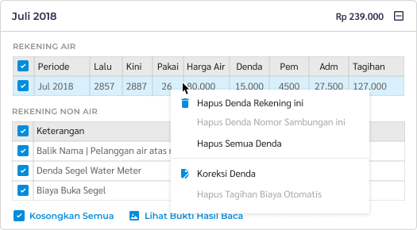

- Masuk ke menu “Tagihan” lalu pilih “Tagihan SR” di sidebar menu kiri.
- Masukkan nomor sambungan pelanggan pada form berikut ini:

- Tekan tombol “Lihat Tagihan” untuk proses selanjutnya.
- Klik kanan di tabel tagihan
- Pilih “Hapus Denda Rekening ini” jika ingin menghapus 1 rekening saja. Pilih “Hapus Semua Denda” jika ingin menghapus denda semua rekening.
